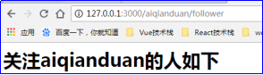
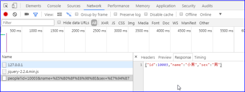
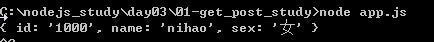

原文连接:https://www.cnblogs.com/rope/p/10726134.html
一、Express框架
1.1基本使用
创建http服务器特别麻烦，express框架解决了这个的问题。
Express在node界的地位，就相当于jQuery在DOM界的地位。jQuery的核心就是“批量”，1个jQuery对象中可以封装多个原生对象。Express的核心就是中间件，Express说大真心不大，主要是因为他做的事儿大，而不是这个框架的功能多。
中文官网（实际上也是英语的）：http://www.expressjs.com.cn/
基于 Node.js 平台，快速、开放、极简的 web 开发框架。
以后的项目都先创建项目身份证，记录依赖：
npm init
安装依赖：
npm install express --save
express框架的API非常简单
var express = require("express"); //返回的是一个函数
var app = express(); //创建app，express函数执行返回一个app对象
//当用户get请求访问/的时候
app.get("/", (req,res)=>{
//输出可用end()或send()方法，而且不用设置字符集，因为express封装好了
res.send("<h1>首页</h1>");
})
//当用户get请求访问/music的时候
app.get("/music", (req,res)=>{
res.send("<h1>音乐频道</h1>");
})
app.listen(3000, function(err){
console.log("3000端口")
})
1.2路由设计
在路由字符串中“:”开头表示一个待定文本（用户决定）：
//当用户get请求访问/music的时候
app.get("/music/:bianhao", (req,res)=>{
var bh = req.params.bianhao;
console.log(bh)
res.send("<h1>编号为"+ bh +"音乐信息</h1>");
})
app.get("/:username/follower", (req,res)=>{
var user = req.params.username;
res.send("<h1>关注"+ user +"的人如下</h1>");
})
app.get("/student/:banji/:bianhao", (req,res)=>{
var banji = req.params.banji;
var bianhao = req.params.bianhao;
res.send("<h1>"+ banji +"班的"+ bianhao +"号学生信息</h1>");
})
看以下两个路由：冲突时
app.get('/music/*', function(req, res){
res.send('<h1>音乐频道子页面</h1>');
});
//当用户get请求访问/music/xxx的时候
app.get('/music/:bianhao', function(req, res){
var bh = req.params.bianhao;
res.send("<h1>编号为"+ bh +"音乐信息</h1>");
});描述：如果中间件请求类型一样，而且url一样，那么前者会覆盖后者，先写的就会拦截请求，不会让请求流向下执行。
注意：
l 如果遇见覆盖问题，可以使用next()方法，而且覆盖的函数不能有res.send()
l 带一些数据/xxx/:username/:xuehao 获取的时候用req.params得到url
1.3中间件
express可以非常方便的使用动词来描述用户访问这个url的请求类型，实际上是Nodejs原生的req.method属性封装的。
概述：app.动词（上行请求类型），一共26种
http://www.expressjs.com.cn/4x/api.html#app.METHOD
var express = require("express"); //返回一个函数
var app = express(); //创建app，express函数执行返回一个app对象
//当用户get请求访问/的时候
app.get('/', function(req, res){
res.send('<h1>我是GET请求</h1>');
});
//拦截前端发过来的各种请求
//拦截POST请求
app.post('/tijiao', function(req, res){
res.send('<h1>我是POST请求</h1>');
});
//删除请求
app.delete('/del', function(req, res){
res.send('<h1>我是delete请求</h1>');
});
//更新某一条数据的请求
app.patch('/update', function(req, res){
res.send('<h1>我是patch请求</h1>');
});
//更新全部数据的请求
app.checkout('/updates', function(req, res){
res.send('<h1>我是checkout请求</h1>');
});
app.listen(3000,function(err){
console.log("3000端口")
});1.4响应输出方法
以下是node中响应输出的所有方法：
app.get('/', function(req, res){
// res.send('<h1>第一个输出方法</h1>');
//输出JSON格式的数据
// res.json({name:"小明", age:12, hobby:["吃饭","睡觉"]});
//输出JSONP格式的数据
// res.jsonp({name:"小明", age:12, hobby:["吃饭","睡觉"]});
//重定向
res.redirect("http://www.baidu.com/");
});
前面学习过fs模块，它主要是文件操作：
fs.readFile(path, function(err,data){
})
在express中封装了一个函数叫sendFile()
//渲染一个文件
app.get("/ddd",(req,res)=>{
console.log(__dirname); //表示当前文件的绝对路径
res.sendFile(__dirname + "/images/1.jpg");
})1.5静态资源服务
概述：express框架提供了一个方法，可以静态出一个文件夹(自动路由)；含义就是静态出去的文件夹当中文件之间，你可以使用相对路径，最爽的一件事，是静态出去的文件夹中的全部的文件你可以不用写路由了，因为express已经帮你做完了；
现在项目中有一个www文件夹，此时要提供自动静态化路由：
var express = require("express"); //返回的是一个函数
var app = express(); //创建app，express函数执行返回一个app对象
//静态化一个文件夹（提供自动路由）
app.use(express.static("www"))
app.listen(3000, ()=>{
console.log("3000端口")
})
还可以给它改名：
app.use("/web", express.static("www"))
var express = require("express"); //返回的是一个函数
var app = express(); //创建app，express函数执行返回一个app对象
//静态化一个文件夹（提供自动路由）
// app.use(express.static("www"))
app.use("/web", express.static("www"))
app.get("/", (req,res)=>{
res.send("<h1>首页</h1>")
})
app.listen(3000)二、ejs模板引擎
ejs是JavaScript模板库，用来从JSON数据中生成HTML字符串。
问题：我们可以呈递一个HTML页面，通过静态化www文件夹，sendFile。如果HTML页面上有待定的内容，怎么办？
使用模板引擎，模板引擎叫ejs（embed.js，嵌入式js）
npm init
npm install --save express
npm install --save ejs┣ views
┃ ┣ index.ejs
┣ app.js
准备JSON数据：
data.json：
[
{
"name" : "小明",
"url" : "xiaoming"
}
.....
]
app.js：
var express = require("express");
var app = express();
//设置默认使用的模板引擎
app.set("view engine", "ejs");
app.get("/", (req,res)=>{
res.render("index"); //不需要写res.render("./views/index.ejs");
})
app.listen(3000, ()=>{
console.log("3000端口")
})
views/index.ejs文件：
<!DOCTYPE html>
<html lang="en">
<head>
<meta charset="UTF-8" />
<title>Document</title>
</head>
<body>
<h1>我是首页!!!!</h1>
</body>
</html>注意：
扩展名必须是ejs，不是html
文件夹必须叫views，如果想改名，用以下方法：
app.set("views", "shitu");
ejs的使用类似underscore的模板标记<% %>和<%= %>来当做模板，与现有的html标记混用。和php干的事情是一样的。
<html>
<head>
<title>首页</title>
</head>
<body>
<h1>你好，我是首页</h1>
<ul>
<%
for(var i = 0; i < students.length; i++){
%>
<li><%= students[i] %></li>
<%
}
%>
</ul>
<select>
<%
for(var i = start; i <= end; i++){
%>
<option value="<%= i %>"><%= i %></option>
<%
}
%>
</select>
</body>
</html>
此时render的时候要模板传递数据：
//设置默认使用的模板引擎
app.set("view engine" , "ejs");
app.get("/",(req,res)=>{
res.render("index",{
"students" : ["小明","小红","小强","小钢炮"],
"start" :1970,
"end" : 2018
});
});
app.listen(3000,()=>{
console.log(3000);
});
有时候render之前需要查数据，此时有点MVC的感觉了：
var fs = require("fs");
app.get("/",(req,res)=>{
//先去读取“模拟数据库”
fs.readFile("./data/users.json",(err,data)=>{
//得到了数据
var arr = JSON.parse(data.toString());
//呈递页面
res.render("index",{
"students" : arr
});
});
});
app.get("/:username",(req,res)=>{
//得到待定用户名
var username = req.params.username;
//先去读取“模拟数据库”
fs.readFile("./data/users.json",(err,data)=>{
//得到了JSON数据
var arr = JSON.parse(data.toString());
//遍历，看看谁的url和当前username相同
arr.forEach((item)=>{
if(item.url == username){
//呈递页面渲染
res.render("myhome",{
"name" : item.name
});
}
});
});
});
data.json：
[
{
"name" : "小明",
"url" : "xiaoming"
}
]
myhome.ejs ：
<html>
<body>
<div class="container">
<h1><%= name %>的小家</h1>
</div>
</body>
</html>
index.ejs：
<li><a href="<%= students[i].url %>"> <%= students[i].name %> </a></li>三、复习
npm常用命令：
npm init
创建一个package.json文件
npm install --save xxx
从npm下载包，自动安装到当前目录的node_modules文件夹，并添加依赖到package.json的dependencies对象（--save可简写为-S）
npm install --save-dev xxx
从npm下载包，自动安装到当前目录的node_modules文件夹，并添加依赖到package.json的devDependencies对象(--save-dev可简写为 -D）
npm install xxx -g
安装在全局环境中
npm root -g
查看全局路径
npm install
自动安装package.json的dependencies对象列出的所有依赖包（install可简写为i）
npm uninstall express --save
卸载指定的模块
npm update express --save
更新指定的模块
npm cache
管理模块的缓存
npm cache clean
清除模块缓存
另外，要学会使用淘宝镜像，会自己研究各种包的API。
cnpm install express --saveExpress框架
之前用fs.readFile()配合if(req.url)来读取静态文件。
if(req.url == "/aaa"){
fs.readFile("./images/ddd.png" , function(err , data){
res.end(data)
});
}
Express框架，提供了http服务器和很多中间件，并且简化了路由表的编写。
现在只需要一条语句就可以将一个文件夹自动提供路由。
app.use(express.static("www"));www表示需要自动提供路由的那个文件夹，类似于Apache的根目录。
在url中用冒号开头引导一个变量，可以立刻用req.params.变量来得到待定值
app.get("/:nian/:yue/:ri" , function(req,res){
var nian = req.params.nian;
var yue = req.params.yue;
var ri = req.params.ri;
res.send(nian + "年" + yue + "月" + ri + "日");
});版本号
{ "dependencies" :
{ "foo" : "^1.0.0", //→固定住了1代大本版号，小版本号随意
"bar" : ">2.1.2", //→必须大于2.1.2版本号
"baz" : ">1.0.2 <=2.3.4", //→且
"boo" : "2.0.1", //→必须完全匹配这个版本号，下载的就是2.0.0
"qux" : "<1.0.0 || >=2.3.1 <2.4.5 || >=2.5.2 <3.0.0", //→三个区间随便选
"asd" : "http://asdf.com/asdf.tar.gz", //→指定一个地址
"til" : "~1.2", //→近似找到1.2，能多近就多近，能找到1.2就用1.2，不能就尽量近
"elf" : "~1.2.3",
"thr" : "3.3.x", //→3.3必须固定，最后一位随意
"lat" : "latest", //→最新版本
"dyl" : "*", //→任意版本，随意！,
"xxx" : "1.0.0 - 2.9999.9999", //→大于等于且小于等于
}
}
四、Nodejs请求识别
4.1 GET和POST请求介绍
比如请求一个报名表的网页，一般情况下访问时，服务器都返回相同内容
l 想要访问一个页面，返回不同的内容，如何解决？
比如希望男生和女生得到的报名表不同，最简单的办法就是请求不同的网页地址：
因为性别只有两个，所以请求不同的页面感觉不出复杂，但如果是不同的国籍，全球有190多个国家，那么页面就太多了。
解决办法有两种：
第一种：用GET请求，通过URL地址加上?引导的k=v&k=v，将自己的个性化数据告诉服务器
GET是得到的意思，指的是希望以一些参数，得到丰富的网页信息。
第二种：POST请求携带报文体
POST请求使用http请求的报文体来携带数据，传给服务器。
POST的意思是“投递”的意思，此时语义上，我们发出POST请求希望服务器持久这些数据。
淘宝买东西，你就是浏览器，卖家是服务器，你要将收货信息告诉卖家，有两种方式：
方法1：收货地址：广州天河区棠东东路御富科贸园D座108室（来了不要打电话直接放前台打电话也不接否则就差评谢谢）
如同GET请求
方法2：收货地址：广州天河区棠东东路御富科贸园D座108室
留言：（来了不要打电话直接放前台打电话也不接否则就差评谢谢）
如同POST请求4.2 GET请求（使用express）
GET、POST请求，都是上行请求，都是把数据从浏览器带向服务器的方式。
现在不是如何发送请求，表单和Ajax都能发送GET、POST请求。现在问题是如何用node识别浏览器发送过来的请求（识别传递过来的参数）。
写一个路由，希望用get请求单独得到某一个用户的信息：
var url = require("url");
var express = require("express");
var app = express();
//静态化www文件夹，可以在www中写前端代码
// app.use(express.static("www"));
var arr = [
{"id" : 10001, "name":"小明", "sex":"男"},
{"id" : 10002, "name":"小红", "sex":"女"},
{"id" : 10003, "name":"小黑", "sex":"男"}
]
app.get("/people" , function(req,res){
console.log(req.url)
})
app.listen(3000);
为了得到GET请求的id参数，使用nodejs提供的url模块的url.parse()方法：
//当用户用get请求访问people的时候
app.get("/people" , function(req,res){
//得到get请求的参数
var id = url.parse(req.url, true).query.id;
//如果用户没有传id参数，则显示所有人信息
if(!id){
res.json(arr);
return;
}
//遍历数组，得到id和url的id参数相同的人
for(var i = 0;i < arr.length;i++){
if(arr[i].id == id){
res.json(arr[i])
// res.send("我是服务器已经收到请求，返回的数据是：" + arr[i].name)
}
}
//存储前端提交的数据到数组
arr.push(obj);
console.log(arr)
})这个叫做接口，所谓的接口就是显示JSON数据，而不是显示HTML界面的网页
没有传id参数，则显示所有人
接口不是给人看的，是返回给前端的，前端用来发出Ajax请求调用得到，得到数据后渲染在页面中。
前端可以借助Ajax发出请求调用接口地址，拿到数据。
<input type="text" id="idTxt">
<button>GET请求-查询</button>
//点击发起查询请求
$("button").eq(0).click(function(){
$.get("/people",{id:$("#idTxt").val() }, function(data){
console.log(data)
})
});
升级一下案例：
www/index.html前端主页
<body>
<p>I D ：<input type="text" class="idTxt" /></p>
<p>姓名：<input type="text" class="name" /></p>
<p>性别：
<input type="radio" name="sex" value="男" class="sex" />男
<input type="radio" name="sex" value="女" class="sex" />女
</p>
<p>
爱好：
<input type="checkbox" class="hobby" value="游泳">游泳
<input type="checkbox" class="hobby" value="看书">看书
<input type="checkbox" class="hobby" value="打球">打球
</p>
<button>GET请求-提交保存</button>
</body>
前端提交的时候，复选框要写IIFE才能遍历多选的数组：
//点击提交到后端，存储信息
$("button").eq(1).click(function(){
var id = $(".idTxt").val();
var name = $(".name").val();
var sex = $(".sex:checked").val();
var hobby = (function(){
var arr = [];
$(".hobby:checked").each(function(){
arr.push($(this).val())
})
return arr;
})();
//发起请求
$.get("/people",{id:id,name:name,sex:sex,hobby:JSON.stringify(hobby)}, function(data){
console.log(data)
})
});
数组中jQuery中发送Ajax的时候，会自作主张的给键名加上[]后缀：
解决方法两种：
1、前端提交JSON.stringify(数组); 后端JSON.parse(数组);
"hobby":JSON.stringify(hobbys)
2、使用jquery的ajax()函数的traditional参数
$.ajax({
url:"/people",
data: {id:id, name:name, sex:sex, hobby:hobby},
success:function(data){
console.log(data)
},
traditional:true
})前端是JS，后端也是JS，Ajax提交的参数，不变形。
4.3 POST请求（使用express）
POST请求的信息不在URL中，而是在请求的报文体中，所以不能通过req.url的形式得到数据，此时使用formidable模块。
POST请求是用来发送大量的数据给服务器，希望服务器持久这些数据，表单的提交的。Nodejs非常害怕大内容，因为如果你上传1G的内容，此时会把进程阻塞，但是Nodejs很聪明，它把浏览器传来的大内容分成一个个包来进行传输，一个包传输完毕，就是一个切断点，nodejs就能给别的人提供服务。
https://www.npmjs.com/package/formidable
npm install --save formidable
app.js后端，使用formidable包的标准语法：
//拦截前端发送的POST请求
app.post("/tijiao" , function(req,res){
//下面两行代码是标准语法
//这是formidable的构造函数，产生一个form表单对象
var form = new formidable.IncomingForm();
form.parse(req, function(err, data){
arr.push(data); //将前端提交的数据存储到数组中
res.send("ok"); //告诉前端
});
});
前端发出POST请求
//************** POST请求 *****************
$("button").eq(2).click(function(){
var id = $(".idTxt").val();
var name = $(".name").val();
var sex = $(".sex:checked").val();
$.ajax({
url:"/tijiao",
type:"post",
data: {id:id, name:name, sex:sex},
success:function(data){
if(data == "ok"){
alert("添加成功");
}
},
traditional:true
})
});
formidable还能处理文件的上传，它使用链路层协议进行传输，比HTTP快很多：
app.post("/tijiao" , function(req,res){
var form = new formidable.IncomingForm();
//设置上传的文件目录
form.uploadDir = "./uploads";
//保留文件扩展名
form.keepExtensions = true;
form.parse(req, function(err, fields, files) {
arr.push(fields); //存储数据
console.log(fields); //fields表示普通文本（文本、单选、复选等）
console.log(files); //files表示文件
res.send("ok"); //告诉前端
});
});
用form表单提交，前端表单加上enctype属性，文件控件要有name属性。
<form action="/tijiao" method="post" enctype="multipart/form-data">
<p><input type="file" name="files" ></p>
<p><input type="submit" value="提交" ></p>
</form>
给上传成功的文件改名：
app.post("/tijiao" , function(req,res){
var form = new formidable.IncomingForm();
//设置上传的文件目录
form.uploadDir = "./uploads";
//保留文件扩展名
form.keepExtensions = true;
form.parse(req, function(err, fields, files) {
if(files.files.name == ''){//如果表单不存在
res.send("请上传文件");
return;
}
//改名函数fs.rename(原路径,新路径,callback)
fs.rename("./"+ files.files.path, "./"+files.files.path + files.files.name,function(err){
if(err){
res.send("重命名失败！")
}else{
res.send("重命名完成！")
}
});
});
});4.4其他请求识别
jquery特别符合w3c规范，express也特别符合。它们配合可以用不同的请求类型：
$("button").eq(3).click(function(){
$.ajax({
type : "checkout",
url : "/update",
data : {"id":10001},
success : function(data){
if(data == "ok"){
alert("更新成功！");
}
}
})
});
$("button").eq(4).click(function(){
$.ajax({
type : "delete",
url : "/remove",
data : {"id":10001},
success : function(data){
if(data == "ok"){
alert("删除成功！");
}
}
})
});
后端app.js
// 其他请求
app.checkout("/update", function(req,res){
res.send("ok"); //告诉前端
});
app.delete("/remove", function(req,res){
res.send("ok"); //告诉前端
});总结：
① get请求在nodejs中用url.parse(req.url,true).qurey识别
② post、checkout等所有其他请求，在Nodejs中用formidable包识别